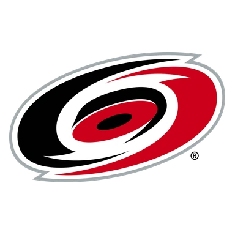

Чикаго — Баффало итог матча 13 ноября
Статистика матча
- 25Броски в створ23
- 1 из 3Голы в большинстве1 из 4
- 10Штрафные минуты8
- 54 %Выигранные вбрасывания46 %
- 19Силовые приёмы21
- 16Блокированные броски9
- 3Отборы3
- 12Потери12
Удаления по минутам 9
- 1-й период
- Sam RinzelПодножка2 мин
- Noah OstlundУдар клюшкой2 мин
- Patrick KaneЗадержка клюшкой2 мин
- 2-й период
- Sam RinzelЗадержка соперника2 мин
- Jiri KulichУдар клюшкой2 мин
- 3-й период
- Rasmus DahlinЗадержка соперника2 мин
- Cole SmithЗадержка соперника2 мин
- Wyatt KaiserВыброс шайбы2 мин
- Rasmus DahlinЗадержка клюшкой2 мин
Данные лиги.
- ТурнирНХЛ
Коротко о матче
Чикаго — Баффало 3:2: хозяева победили в овертайме.
Главное перед игрой — серия: Чикаго — 6 поражений подряд. По форме разница была заметной: в пяти последних матчах Баффало — 2 победы, Чикаго — ни одной победы. Слабое место — оборона: Чикаго — в среднем 5,6 пропущенной шайбы за игру в этих пяти матчах.
До этого команды встречались 14 апреля 2026 года: Чикаго — Баффало 1:5.
Форма: последние матчи
 Чикаго 0 побед из 5
Чикаго 0 побед из 5
 П4:5
П4:5 П2:5
П2:5 П3:5
П3:5 П1:4
П1:4
П2:9
 Баффало 2 победы из 5
Баффало 2 победы из 5
 В3:2
В3:2 П1:2
П1:2 В5:2
В5:2 П1:4
П1:4- П3:8
Личные встречи
- Чикаго1:5Баффало
- Баффало9:3Чикаго
- Баффало6:2Чикаго
- Чикаго2:4Баффало
Положение в таблице
| Команда | Место | И | В | П | Голы | Очки |
|---|---|---|---|---|---|---|
| 15 | 19 | 5 | 14 | 42:78 | 11 | |
| 11 | 19 | 8 | 11 | 55:68 | 20 |
Куда дальше
Все прогнозы дня — в TelegramПрогнозы на КХЛ, НХЛ и футбол, итоги каждое утро. Бесплатно.
Открыть каналМатериалы носят информационный характер и не гарантируют результат. Реклама букмекеров на сайте не размещается. Сайт только для совершеннолетних (18+).